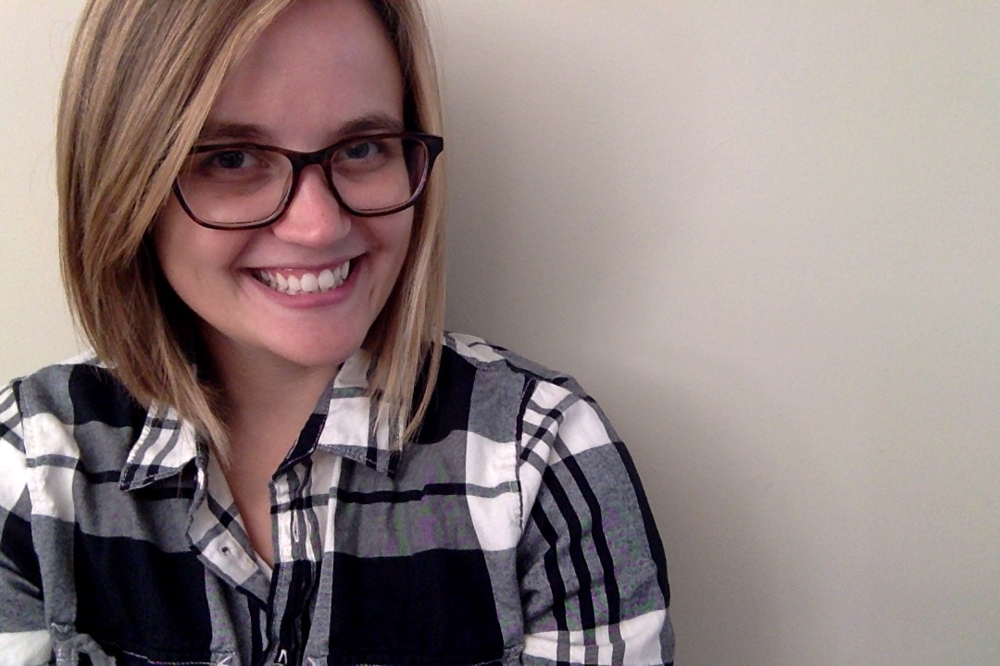

Kayaking Nut / Gardener / Craft Beer Enthusiast / Kate Spade Obsessed / Coffee Snob / Vegetarian / Dog Lover

I'm a glasses-wearing, beer-loving, outdoorsy tech and design nerd. Based in Richmond, VA, I focus on UI/UX design and front-end development. Currently, I am working on my master's degree in web design & online communication.
I love finding the perfect blend of design, usability, and interactivity to meet a goal. I love finding creative solutions for complex problems. And, I love developing sites that not only look good, but that function well. But, mostly, I just love creating great things for the web.
University of Florida, Expected December 2015
Virginia Tech, 2012, Magna Cum Laude